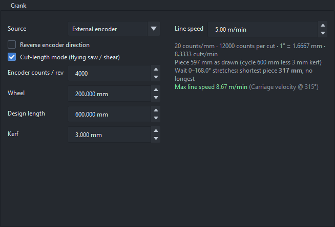
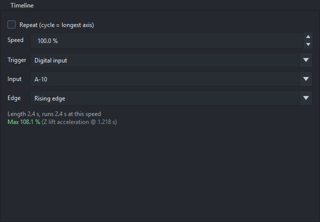
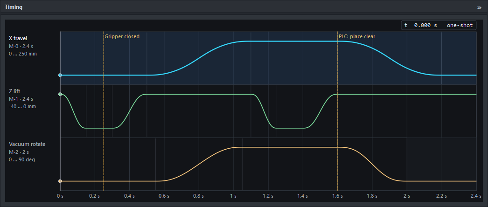
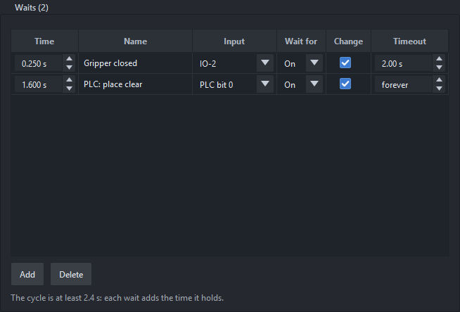

Every axis follows a master. One firmware runs up to four axes (one per motor connector, M-0 to M-3), and each axis picks its master: crank axes and timeline axes can run together.
| Master | x is | Repeats | Typical use |
|---|---|---|---|
| Crank | the crank angle, 0 to 360° | every revolution | anything tied to a machine shaft or a line |
| Timeline | seconds from a trigger | once per trigger, or repeating | moves started by an input: pick and place, gates |

The Crank page, here in cut-length mode with an encoder on the line.
The crank is either:
The gear ratio is motor (or encoder) turns : crank turns as a fraction, so a gearbox that is not a whole ratio stays exact (50 : 7). With axis velocity / acceleration limits set, the page gives the highest safe crank speed, including the extra acceleration followers feel while a driven crank ramps.
No encoder yet? Tick Simulate, Start, then Run in the Sim encoder row of the Board page row: the board moves a simulated count and everything follows it as it would a real one.

The Timeline page: repeat, speed override and the trigger.
On the timeline x is time in seconds from a t = 0 shared by every timeline axis. Each timeline axis has its own duration (drag its last knot sideways, or set Duration in the Axis page) and rests at its end position after it.
The timeline's length is the longest timeline axis or the last timeline output pulse, whichever ends later.
A wait holds the timeline at a point until an input says go. It is how a timeline machine checks that something happened before it carries on: the part is gripped before the lift rises, the clamp is closed before the saw comes down, the PLC has cleared the place position before the arm swings over it.
At a wait, every timeline axis and every timeline output stays exactly where it is. When the input arrives the timeline runs on from there, as drawn, as if it had never stopped: each wait only adds the time it held to the cycle. Crank axes, in a project that has both, carry on: a wait holds only the timeline.

The pick and place with two waits, drawn as dashed lines across the Timing view.
In the Pick and place example the Z lift goes down, the vacuum comes on (IO-0, from 0.3 s), and the lift rises with the part. Nothing on the timeline knows whether the part was really picked. Two waits fix that:
To build it: open Timeline › Waits in the project tree, move the cursor near where the wait should be, and press Add. Or right-click the Timing view there: Wait for an input here…. Then fill in the row.

The Waits page of the pick and place: one wait on a board input, one on a PLC bit.
| Time | Seconds into the cycle, as drawn. A wait goes only where every timeline axis is at rest (the board stops the clock at once, which is gentle only there): Add and the right-click put it at the nearest such time, and Analysis marks one where an axis moves as an error. To move a wait, drag its line in the Timing view: it turns red where an axis is moving and, dropped there, snaps to the nearest time they all rest. |
| Name | What the operator sees while it waits: Waiting for Gripper closed. |
| Input | A board input (IO-0 … A-12), a CCIO-8 input, or a PLC bit (0 … 31) that the PLC sends in its output assembly (the PLC chapter). An input that already does something else (an output, the trigger, the estop, a home or limit, an operator input) can't be one. A wait's input shows Timeline wait on the Inputs page. |
| Wait for | On (the input closed / the bit set) or Off. |
| Change | Ticked (the default): the wait passes only if the input has been at the other level since this wait last passed (since Start, the first time), and is at the wanted level now. So a sensor stuck On can't let the next cycle through: the wait holds, and times out if it has a timeout. The change can come any time before the timeline gets there: a gripper that closes early isn't missed. Unticked: the level alone, for a steady condition that is simply true or not, such as a guard door closed or the PLC's go. |
| Timeout | How long it may hold, or forever. Past it, the machine stops at the wait with the fault wait 1 (IO-2 on) timed out at 0.250 s, the motors still enabled and holding. |
While a wait holds, the board strip's timeline line says Waiting for Gripper closed (IO-2 on), 3.2 s, and the Timing view lights that wait's line. The PLC sees TimelineState 6 (waiting), StatusFlags bit 14, which wait (WaitIndex) and for how long (WaitedMs): with no timeout, the PLC can raise its own alarm after however long suits the machine.
A wait that never passes: look at its input on the Inputs page (State) while it waits. With Change ticked, the input must also go to the other level once: a sensor stuck on holds it, which is what the setting is for. A PLC-bit wait needs the PLC connected and in Run.
Changing an axis's master keeps its motion: crank → timeline maps one revolution at the current crank speed onto seconds; timeline → crank stretches the duration to 360°.
For a flying saw, laser or shear whose cut length changes on the fly, see cut-length mode.